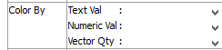

Color By
Determines how the plot item will be colored.
There are three groups of options: textual values, numeric values, and vector quantities. The options here are mutually exclusive; only one selection can be active at any time. Each of the three selectors presents an ATTRIBUTES group and a PROPERTIES group.
With some selections an additional field is supplied; when they appear these are described in the tables below. Any vector quantity will supply an additional field to specify either the component {x or y in 2D; x, y, or z in 3D} or the magnitude (mag) of the vector.
Items in the ATTRIBUTES group are ball characteristics such as radius, density, mass, velocity etc. These may be specified via
the ball thermal attribute command.
Items in the PROPERTIES group are assigned with the ball thermal property
command and can be used by contact models to determine the contact model properties via the
inheritance mechanism. Selecting “–>Add Prop” at the bottom of a selector provides a dialog that allows the user to
specify a new property to add to the property list (and make it the active Color By
selection).
Selecting either the label ATTRIBUTE or PROPERTY on a selector will switch coloring to the default Color By selection.
Once the quantity/value/property to be colored is chosen in Color By, the user can handle the specifics of the coloring using the Color Opt attribute.
| Name | Description |
|---|---|
| extra | Colors by extra variable. An additional field is supplied to identify the variable by its index. |
| fixity | Colors by fixity. |
| group | Colors by group. An additional field is supplied to specify the slot index. The default setting is Any (which occupies index position 0 on the spinbox). |
| Name | Description |
|---|---|
| extra | Colors by extra variable. An additional field is supplied to identify the variable by its index. |
| appliedpower | Colors by applied power. |
| deltemp | Colors by temperature increment. |
| sheat | Colors by specific heat. |
| temperature | Colors by temperature. |
| thexp | Colors by thermal expansion coefficient. |
| unbalpower | Colors by unbalanced power. |
| Name | Description |
|---|---|
| extra | Colors by extra variable. An additional field is supplied to identify the variable by its index. |
| Was this helpful? ... | UDEC © 2018, Itasca | Updated: Mar 15, 2024 |